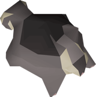

OSRS Max Cape Plan
What should I do?
Refresh Hiscores, quests and diaries, then turn the optimal route into one next action.
 Main Progression
Main Progression
- Quest-cape preparation
 Ranged58/62
Ranged58/62 Magic68/75
Magic68/75 Smithing60/72
Smithing60/72 Firemaking68/75
Firemaking68/75 Runecraft57/60
Runecraft57/60 Hunter65/70
Hunter65/70 Agility61/70
Agility61/70 Thieving56/72
Thieving56/72 Slayer53/74
Slayer53/74 Woodcutting71/74
Woodcutting71/74 Cooking70/72
Cooking70/72 Sailing50/62Combat89/85
Sailing50/62Combat89/85- Follow the optimal quest route until it reaches a real level gate; train only enough to clear the next group of blocked quests.
- Do
 Slayer before separate combat training because cannon and burst tasks carry
Slayer before separate combat training because cannon and burst tasks carry  Ranged and
Ranged and  Magic alongside it.
Magic alongside it. - While Guthix Sleeps also needs
 Attack +
Attack +  Strength 130 (already 140), or 99 in either skill.
Strength 130 (already 140), or 99 in either skill.
 Quest Cape
Quest Cape- All Hard
 Diaries
Diaries - Slayer to 9553of 95 Slayer
- Elite diary skill walls
 Fishing61/96Magic68/96Cooking70/95
Fishing61/96Magic68/96Cooking70/95 Fletching99/95Slayer53/95
Fletching99/95Slayer53/95 Farming99/91Runecraft57/91Smithing60/91Thieving56/91Agility61/90
Farming99/91Runecraft57/91Smithing60/91Thieving56/91Agility61/90 Herblore75/90Woodcutting71/90
Herblore75/90Woodcutting71/90 Crafting75/85Firemaking68/85
Crafting75/85Firemaking68/85 Mining72/85
Mining72/85 Prayer77/85
Prayer77/85 Construction77/78
Construction77/78 Strength70/76
Strength70/76 Defence67/70
Defence67/70 Hitpoints70/70Hunter65/70Ranged58/70Sailing50/52
Hitpoints70/70Hunter65/70Ranged58/70Sailing50/52 Attack70/50
Attack70/50  Max Cape2/24
Max Cape2/24
Quest Cape Progress
Next in the guide: The Depths of Despair · 26 part-finished
WikiSync has not reported the newly released Fallen From Grace yet; it is counted as outstanding with unknown completion state.
Fallen From Grace
Requires Pandemonium. Speak to Cormac in the middle of Auchrie village.
- 1The Depths of Despairon deck
- 2Wanted!
- 3The Giant Dwarfstarted
- 4Forgettable Tale...
- 5Another Slice of H.A.M.
- 6Karamja Diary · Easy4/10
- 7Zogre Flesh Eaters
- 8Garden of Tranquillity
- 9Enlightened Journey
- 10In Aid of the Myreque
- 11Darkness of Hallowvale
- 12Regicidestarted
- 13Kandarin Diary · Easydiary
- 14Contact!
- 15One Small Favour
- 16The Ascent of Arceuus
- 17Tale of the Righteous
- 18The Forsaken Tower
- 19Desert Diary · Easy3/11
- 20Fremennik Diary · Easy1/10
- 21Falador Diary · Easy4/11
- 22Kourend & Kebos Diary · Easy2/12
- 23Lumbridge & Draynor Diary · Easy3/12
- 24Morytania Diary · Easy4/11
- 25Varrock Diary · Easy4/14
- 26Western Provinces Diary · Easy3/11
- 27Wilderness Diary · Easy3/12
- 28Between a Rock...
- 29The Slug Menace
- 30Getting Ahead
- 31Cold War
- 32The Hand in the Sand
- 33Eadgar's Ruse
- 34My Arm's Big Adventure
- 35Rag and Bone Man IIstarted
- 36Rum Deal
- 37Cabin Fever
- 38Meat and Greet
- 39Throne of Miscellania
- 40Royal Trouble
- 41Lair of Tarn Razorlor
- 42Ethically Acquired Antiquities
- 43Twilight's Promise
- 44Roving Elves
- 45Mourning's End Part I
- 46Mourning's End Part II
- 47What Lies Below
- 48Legends' Queststarted
- 49Land of the Goblins
- 50Olaf's Quest
- 51A Kingdom Divided
- 52A Taste of Hope
- 53At First Light
- 54Ardougne Diary · Medium2/12
- 55Desert Diary · Medium4/12
- 56Falador Diary · Medium2/14
- 57Fremennik Diary · Mediumdiary
- 58Kandarin Diary · Medium1/14
- 59Kourend & Kebos Diary · Medium3/13
- 60Lumbridge & Draynor Diary · Medium4/12
- 61Morytania Diary · Medium4/11
- 62Varrock Diary · Medium5/13
- 63Western Provinces Diary · Medium2/13
- 64Curse of the Empty Lord
- 65The General's Shadow
- 66His Faithful Servants
- 67The Great Brain Robbery
- 68Scrambled!
- 69Fairytale II - Cure a Queenstarted
- 70Perilous Moons
- 71The Path of Glouphrie
- 72The Heart of Darkness
- 73Lunar Diplomacy
- 74King's Ransom
- 75Swan Song
- 76Defender of Varrock
- 77Devious Minds
- 78Grim Tales
- 79Dream Mentor
- 80Karamja Diary · Medium6/19
- 81Wilderness Diary · Medium1/11
- 82The Fremennik Exiles
- 83Sins of the Father
- 84In Search of Knowledge
- 85Hopespear's Will
- 86Beneath Cursed Sands
- 87Shadows of Custodia
- 88Troubled Tortugans
- 89The Red Reef
- 90Monkey Madness II
- 91Into the Tombs
- 92A Night at the Theatre
- 93Dragon Slayer II
- 94The Curse of Arrav
- 95Making Friends with My Arm
- 96Secrets of the North
- 97The Final Dawn
- 98While Guthix Sleeps
- 99Desert Treasure II - The Fallen Empire
- 100Song of the Elves
- 101The Blood Moon Rises
- 102Clock Tower
Diary Progress
Slayer
 Nieve/Steve initially.
Nieve/Steve initially. Konar when useful for milestone points.
Konar when useful for milestone points. Duradel after 100 combat,
Duradel after 100 combat, 50andSlayer Shilo Village access.
Shilo Village access.- Cannon tasks to train Ranged.
- Burst appropriate tasks to train Magic.
- Melee priority: Strength to ~85 first, then Attack 80, then
 Defence 75–80.
Defence 75–80. - Let Slayer and later bossing carry most combat XP rather than separately grinding combat skills early.
Post-Diary-Cape Maxing Order
Levels start from where the Diary Cape leaves them, not from today, so nothing here is counted twice. 1,569 hours on the hybrid route, at the same rates and shared XP the route tables use. Ordered so the hours that pay come before the hours that cost; searching every reordering finds nothing cheaper.
- Slayer to 9985 hours
Every hour here is also
Attack, Strength, Defence and  Hitpoints, and Ranged and Magic on cannon and barrage tasks. Bank the bones: they are most of your
Hitpoints, and Ranged and Magic on cannon and barrage tasks. Bank the bones: they are most of your  Prayer.
Prayer. - Finish combat624 hours
Whatever
Slayer did not already carry. Ranged and Magic go fast on 
chins and barrage,Prayer burns the bones you banked, Hitpoints arrives on its own.Slayer's carry is already subtracted, which is why Hitpoints is free and Magic is nearly so. - The grinds that pay334 hours
Long, but they fund everything after them.
 Runecraft first: 77 turns blood runes into income for the rest of the account.
Runecraft first: 77 turns blood runes into income for the rest of the account. - Slow gatherers379 hours
The tail. Roughly break-even, so do them once the bank is fat and nothing else depends on them.
- Buyables last147 hours
Fast, and paid for by the blocks above. Cheapest per hour first so the bank drains most slowly.
 Feeders and Unlocks
Feeders and Unlocks
6 of 10 are open to you now. These are the reason the order matters: reach the requirement before the grind it pays into, not after, or the free XP lands on levels you already bought.